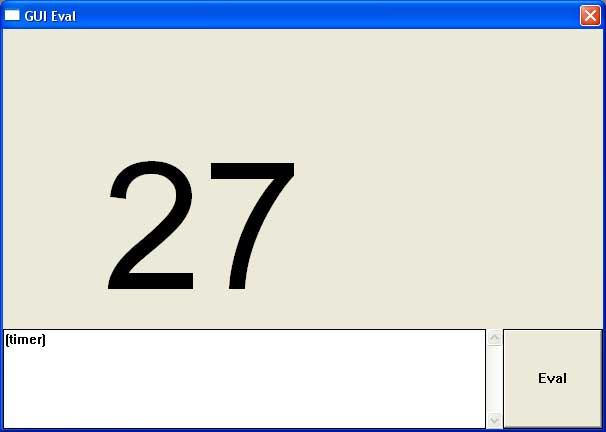
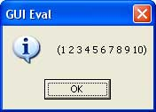

The lispbuilder-windows package is a part of the Common Lisp Application Builder project which is in turn a part of the umbrella Common Lisp Gardeners project. The goal is to provide all Microsoft Windows API function, which are available for C programs when you include the standard windows.h header file.
The following table describes the status of the Lisp implementations that have been tested with lispbuilder-windows:
| Lisp Implementation | lispbuilder-windows Status | Comments |
| CLISP v2.38 | Working | |
| Lispworks v4.3.7 Professional | Working | |
| Allegro Trial Edition 7.0 | Unknown | |
| SBCL | Unknown | |
| CMUCL | Unknown |
The asdf.lisp and CFFI packages are required prior to the installation of lispbuilder-windows. The installation of these packages is descibed in the lispbuilder-sdl documentation.
Now you can start CLISP and enter the following at the prompt:
(pushnew "/programme/clisp-2.38/asdf/lispbuilder-windows/" asdf:*central-registry*) (asdf:operate 'asdf:load-op :lispbuilder-windows) (asdf:operate 'asdf:load-op :lispbuilder-windows-examples)
To verify that lispbuilder-windows is installed correctly, run one of the examples by entering:
(in-package :lispbuilder-windows-examples) (gui-eval)
You should see a window with a text field with "(timer)" and a button. When you click the "Eval" button, the text is evaluated as Lisp. "timer" is a predefined function for an animated timer like this:

There are three demo functions defined:
(defun hello ()
(clear)
(draw-string 250 180 "Hello World!")
(move-to 200 200)
(line-to 390 200)
(repaint))
(defun painter ()
(let ((is-down nil))
(install-mouse-down-handler #'(lambda (x y)
(move-to x y)
(setf is-down t)))
(install-mouse-up-handler #'(lambda (x y)
(declare (ignore x y))
(setf is-down nil)))
(install-mouse-move-handler #'(lambda (x y)
(when is-down
(line-to x y)
(repaint))))))
(defun timer ()
(set-font 200)
(let ((start (get-internal-real-time)))
(install-timer 100
#'(lambda ()
(let ((elapsed (- (get-internal-real-time) start)))
(draw-string 100 100
(format nil "~a"
(floor elapsed
INTERNAL-TIME-UNITS-PER-SECOND)))
(repaint))))))
You can enter your own Lisp code and execute it with the "eval" button, e.g.:
(message-box (format nil "~a"(loop for i from 1 to 10 collect i)))
All available functions:
All other Common Lisp functions are available, too and some Windows GDI functions.
If you don't want to install all the packages, like CLISP, ASDF, CFFI etc., then you can download a standalone binary distribution with CLISP integrated. Download the latest win32-gui-eval release from Sourceforge. You need the gui-eval.exe, only, but included is the delivery script and files, if you want to deliver your own applications.
The Common Lisp Application Builder project relies on SWIG
to create the CFFI bindings for Windows. Currently SWIG does not get us 100%
of the way with the header wrappers, there are a few things you need to change
in the Windows headers, see "windows.h", which is a small and modified
subset of all windows functions.
Run swig using and prepare to edit lots of the generated file:
swig -cffi winswig.i